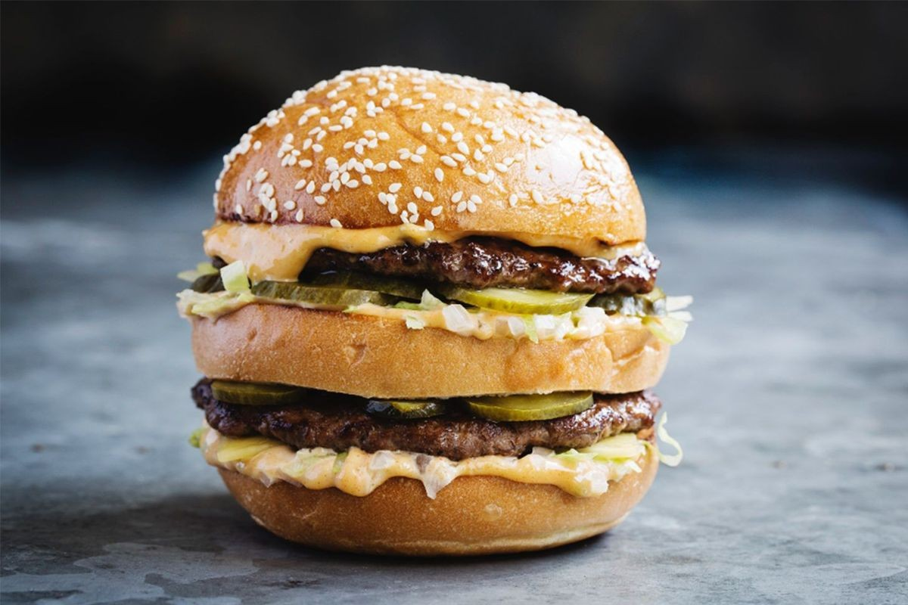

Big Mac

Description
If you’ve ever been to McDonald’s, you have tried a McDonald’s Big Mac. Now you can create your own homemade Big Mac recipe!
The Big Mac ingredients include two hamburger patties, American cheese, “special sauce” (a variant of Thousand Island dressing),
iceberg lettuce, pickles, and onions, served in a three-part sesame seed bun.
Ingredients
- ground Chuck meat
- salt & Pepper
- butter
- american cheese
- minced onion
- pickle slices
- iceberg lettuce
- special sauce
Steps
- season the hamburger meat with salt and pepper. Shape into 10 thin patties. Grill the patties to your liking.
- spread butter on cut sides of the buns and add to grill until it browns slightly. Make sure the middle bun toasts on each side.
- add the secret sauce, lettuce, cheese, onions and one patty to the bottom bun. Top it off with the middle bun.
- add the sauce. lettuce, pickles, onion and another patty to the middle bun. Top with the top bun and you are all set.